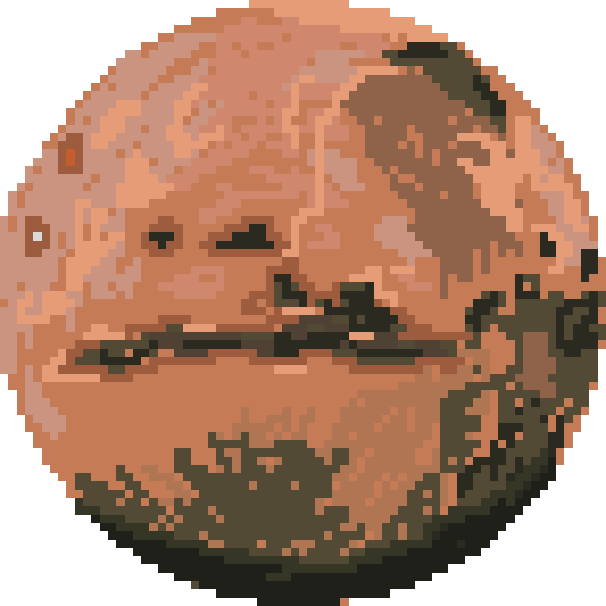

Marte

Marte: o planeta vermelho
Marte é o quarto planeta a partir do Sol e o mais estudado depois da Terra. Sua cor avermelhada vem da ferrugem: o solo e a poeira são cheios de óxido de ferro. Por lembrar a cor do sangue, ele recebeu o nome do deus romano da guerra. Da Terra, dá para vê-lo a olho nu como um ponto alaranjado no céu noturno.
Um dia quase igual ao nosso
O dia em Marte, chamado de "sol", dura 24 horas e 37 minutos, bem parecido com o da Terra. Já o ano é bem mais longo: Marte leva 687 dias terrestres para dar a volta no Sol, quase o dobro do nosso. Como seu eixo também é inclinado, Marte tem estações do ano, só que cada uma dura cerca de seis meses.
Frio, seco e empoeirado
A atmosfera de Marte é tão fina que a pressão lá é menos de 1% da pressão da Terra. Sem um "cobertor" para guardar o calor, a temperatura média fica em torno de −60 °C. De tempos em tempos, tempestades de poeira crescem tanto que cobrem o planeta inteiro por semanas. E, ao contrário daqui, o pôr do Sol em Marte é azulado.
Gigantes do Sistema Solar
Mesmo tendo metade do tamanho da Terra, Marte guarda recordes. O Monte Olimpo é o maior vulcão conhecido do Sistema Solar, com cerca de 22 km de altura, mais de duas vezes e meia a altura do Everest. E o Valles Marineris é um cânion com cerca de 4.000 km de comprimento, que atravessaria o Brasil de ponta a ponta.
Duas luas em forma de batata
Marte tem duas luas pequenas e irregulares, Fobos e Deimos, que provavelmente são asteroides capturados. Fobos está se aproximando de Marte aos poucos e, daqui a dezenas de milhões de anos, deve se despedaçar e talvez formar um anel ao redor do planeta.
Um passado com rios e lagos
Hoje Marte é um deserto gelado, mas nem sempre foi assim. Há leitos de rios secos, deltas e antigos lagos por toda a superfície, e seus polos guardam gelo de água. Bilhões de anos atrás, Marte provavelmente era mais quente e úmido, com condições que poderiam ter permitido vida microscópica.
Robôs exploradores
Marte é o único planeta além da Terra onde robôs passeiam pela superfície. Hoje, dois jipes da NASA trabalham lá: o Curiosity, que chegou em 2012, e o Perseverance, que chegou em 2021 trazendo o Ingenuity, o primeiro helicóptero a voar em outro planeta. Em 2026, os cientistas anunciaram que o Curiosity encontrou a maior variedade de moléculas orgânicas já vista em Marte, incluindo sete nunca detectadas antes no planeta. Essas moléculas não provam que houve vida, mas são os mesmos "tijolinhos" que deram origem à vida na Terra. Para ter certeza, será preciso trazer as amostras coletadas pelo Perseverance para análise em laboratórios aqui.
Frio, vermelho e cheio de pistas sobre o passado, Marte é o planeta que mais alimenta o sonho de encontrar vida fora da Terra e, quem sabe um dia, de receber os primeiros visitantes humanos.